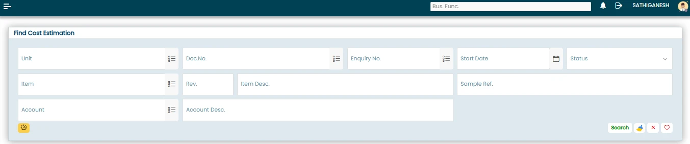
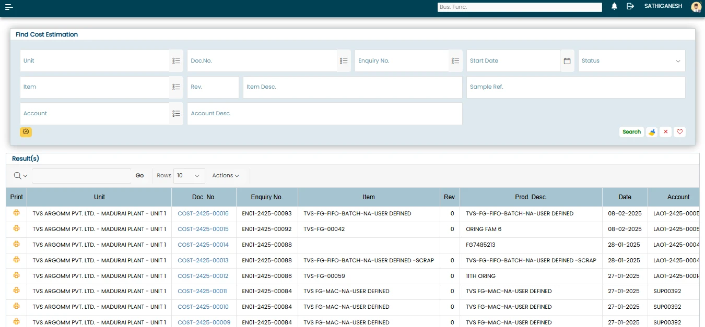
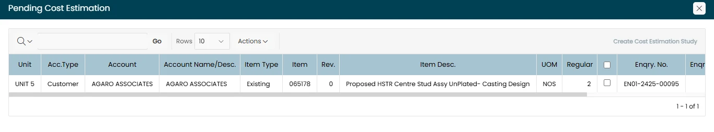
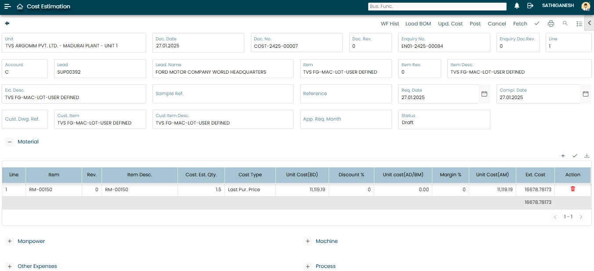
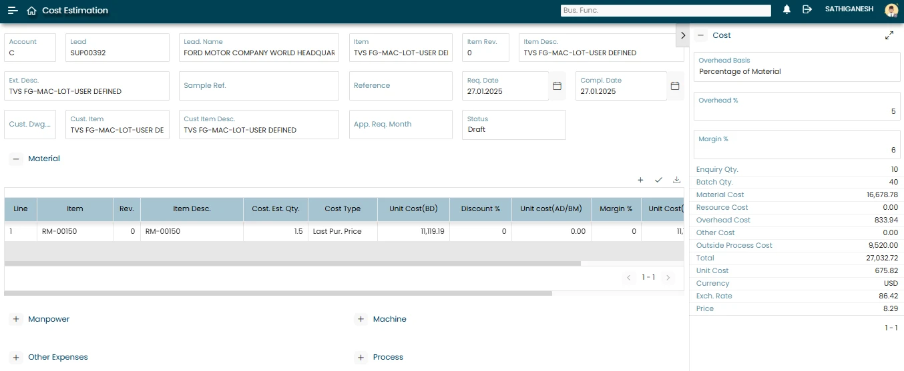
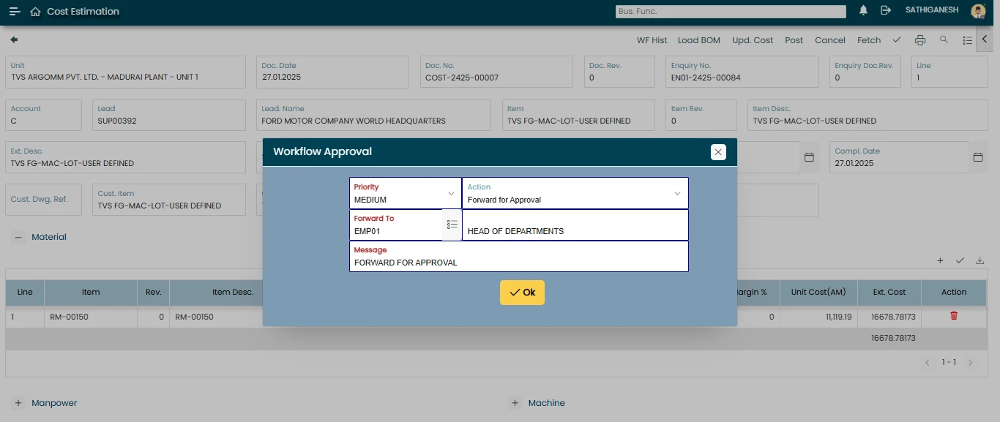

<div data-category="CRM" data-title="Cost Estimation" data-updated="December 01, 2025" data-contributors="RoadmapIT" data-breadcrumb="Home,CRM,Cost Estimation">
  <div class="page-content">
    <p>Cost estimation is the process of predicting the financial resources required to complete a project or operation. It involves calculating the total costs by considering various elements such as materials, labor, equipment, and other expenses, in marketing Pending Cost Estimation are all configured in this screen.</p>
    <h5>Navigation path:</h5>
    <p class="fs-6">CRM \ Transaction \ Cost Estimation</p>
    
    <ul style="list-style-type: none; align-content: center">
      <li class="mouse-icon">Search screen displays the list of Cost Estimation  with the relevant details and its status</li>
      <li class="mouse-icon">Click on Search to filter all the records</li>
    </ul>
    
    <ul style="list-style-type: none; align-content: center">
      <li class="mouse-icon">User can filter the respective documents by entering the search parameters at the header</li>
      <li class="mouse-icon">On clicking search button, system displays the results relevant to the search parameters entered</li>
      <li class="mouse-icon">Using  icon, entered search parameters can be cleared</li>
      <li class="mouse-icon">To close the screen, use <i class="bi bi-x fs-4 mx-2 text-danger"></i> icon</li>
      <li class="mouse-icon">On clicking <i class="bi bi-speedometer2 fs-4 mx-2"></i> icon, pending cost estimation yet to be processed is displayed as shown below</li>
    </ul>
    
    <ul style="list-style-type: none; align-content: center">
      <li class="mouse-icon">You filter with the pending cost estimation. Field or with any of the relevant search fields in the header, pending Cost estimation will be displayed with the following details</li>
      <li class="mouse-icon">Select the Record</li>
      <li class="mouse-icon">Click Create Cost Estimation</li>
    </ul>
    
    <ul style="list-style-type: none; align-content: center">
      <li class="mouse-icon">Enter the Manpower cost</li>
      <li class="mouse-icon">Enter the Machine cost</li>
      <li class="mouse-icon">Enter the Other Expenses</li>
      <li class="mouse-icon">Enter the Process cost</li>
      <li class="mouse-icon">Click Load BOM; BOM Details added</li>
      <li class="mouse-icon">If you want to cancel the document use Cancel button</li>
    </ul>
    
    <ul style="list-style-type: none; align-content: center">
      <li class="mouse-icon">Enter the Overhead %</li>
      <li class="mouse-icon">Enter the Margin %</li>
      <li class="mouse-icon">The cost will be calculated automatically based on formula</li>
      <li class="mouse-icon">Click Update cost button to Cost Update Automatically based on formulas</li>
      <li class="mouse-icon">Click <i class="bi bi-check-lg fs-4 mx-1 text-success"></i> to Save</li>
      <li class="mouse-icon">Click on Post and the document can be forwarded for approval</li>
    </ul>
    
  </div>
</div>